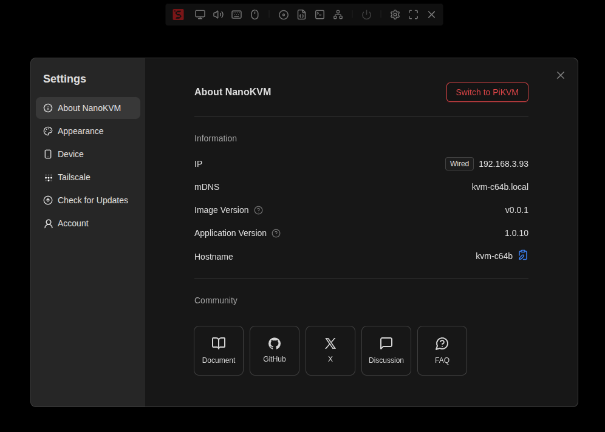
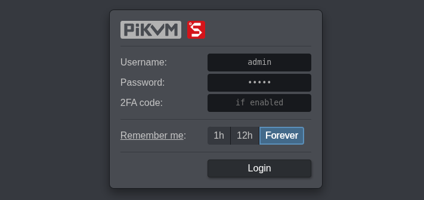
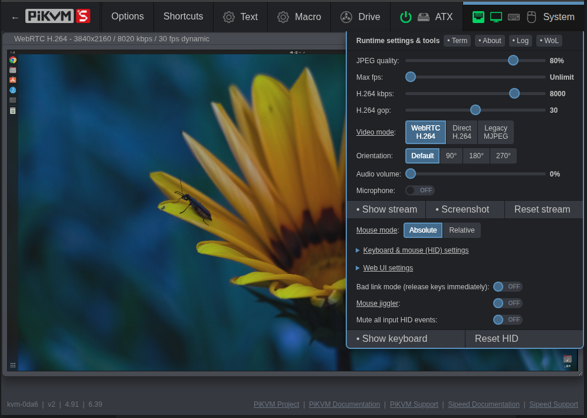
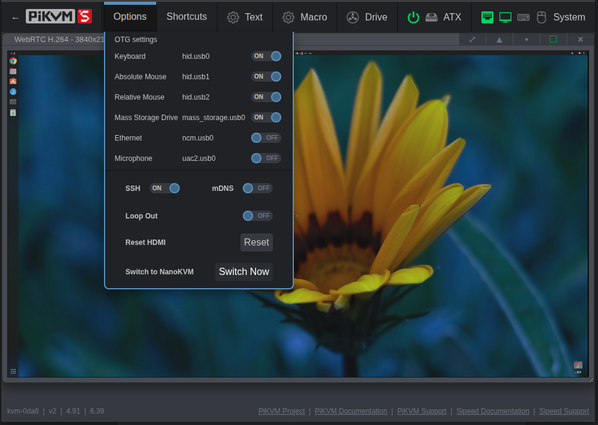
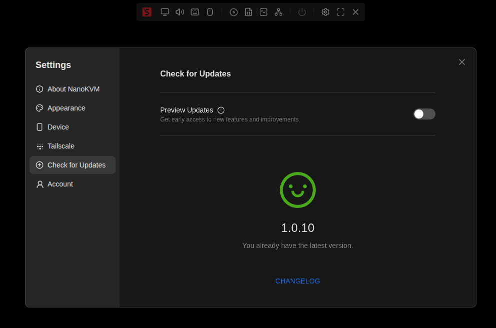
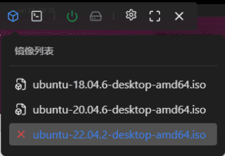
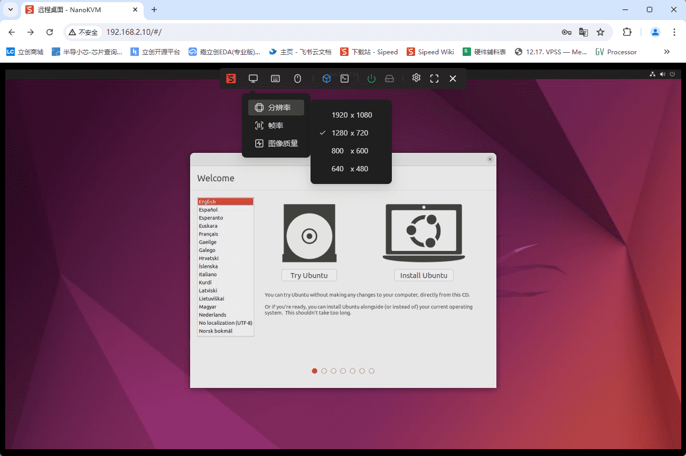
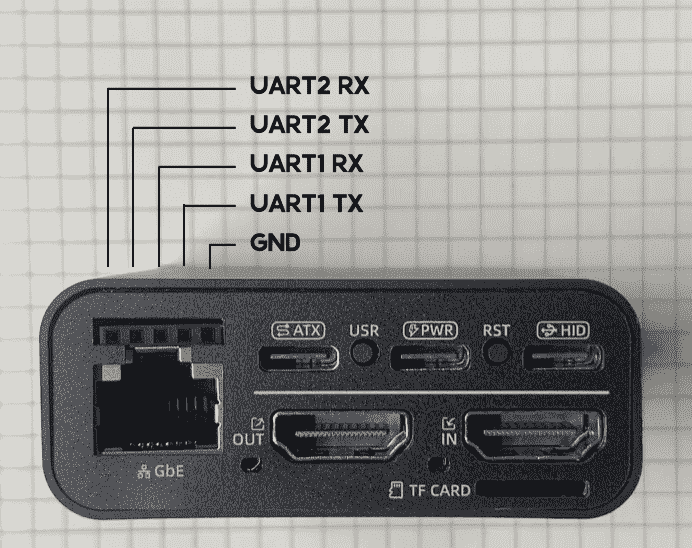
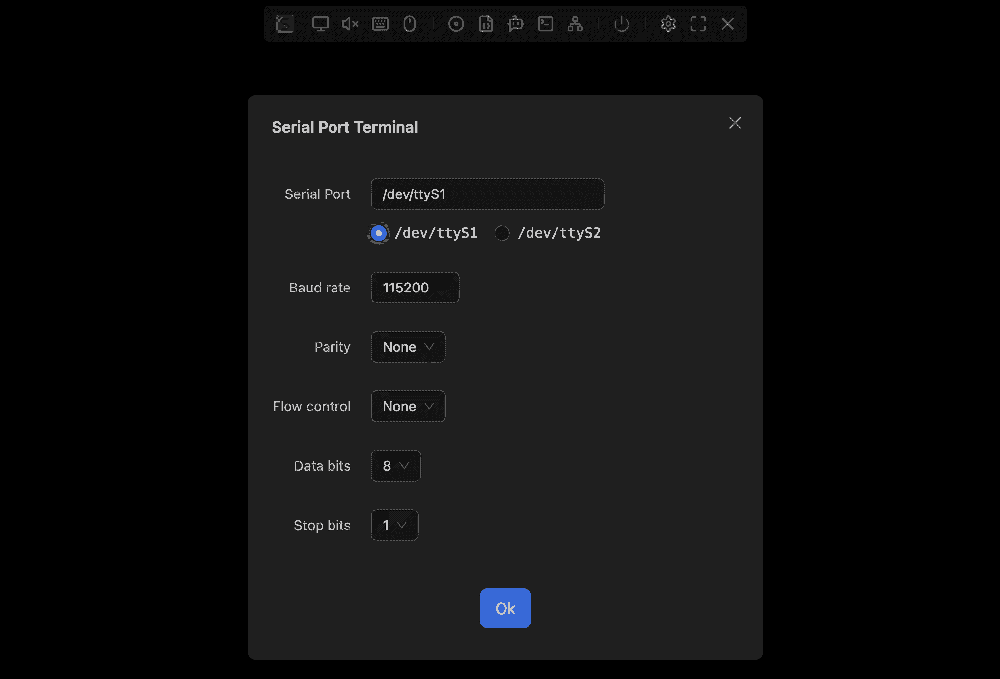
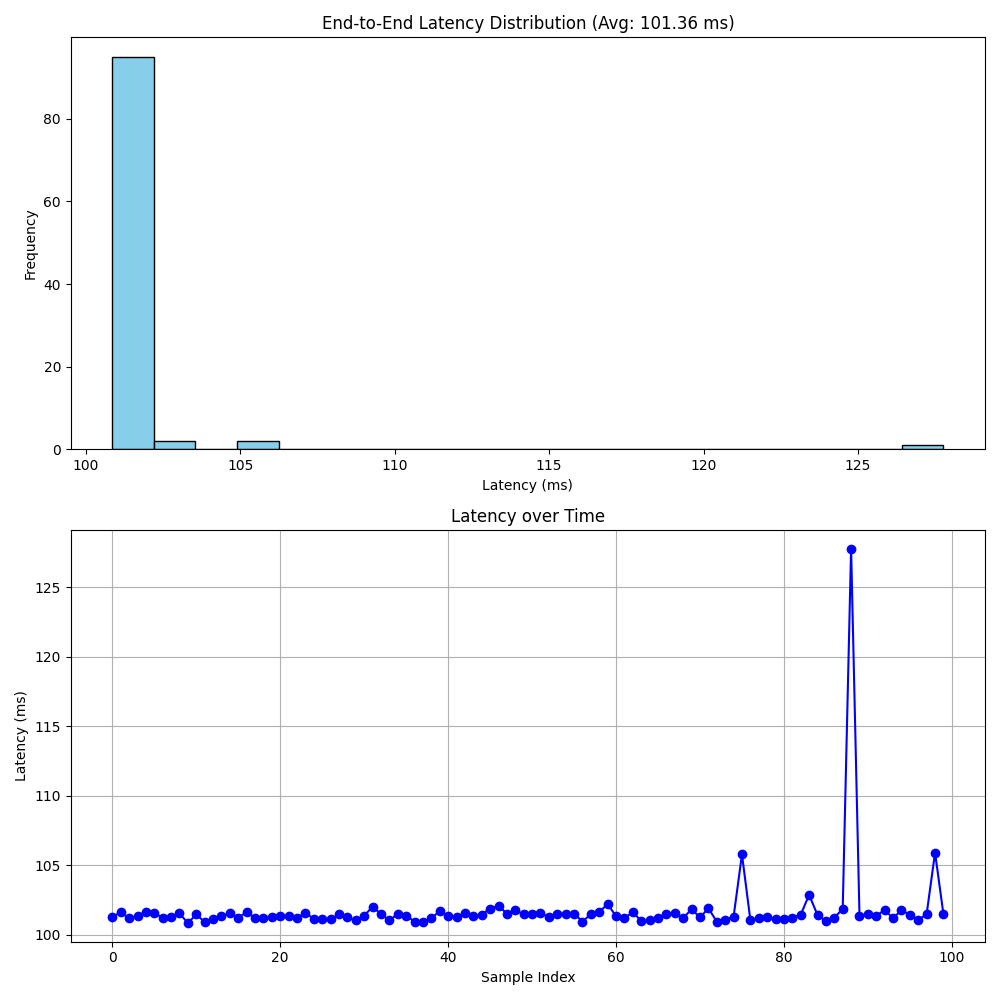

中文
中文高级应用
更新历史
| 日期 | 版本 | 作者 | 更新内容 |
|---|---|---|---|
| 2025-9-11 | v0.2 | iawak9lkm |
|
| 2025-8-26 | v0.1 | BuGu |
|
系统框架切换
NanoKVM Pro 除运行 NanoKVM 框架外，还完全适配了 PiKVM 软件框架。您可以根据使用需求灵活切换。
从 NanoKVM 切换至 PiKVM
NanoKVM Pro 出厂默认运行 NanoKVM 框架。切换步骤如下：
进入
设置→关于→切换设备
点击切换按钮后，系统将自动重启并启动 PiKVM 框架（约需 30 秒）。如长时间未自动切换，请手动刷新网页

PiKVM 框架下的默认账号密码同样为
admin/admin
注意事项：
- 两个平台各自独立管理账号与密码，互不同步，强烈建议登录后立即修改默认密码
- PiKVM 框架下的部分功能需要通过网页终端实现，如 WiFi 配网、Tailscale 配置等
- NanoKVM 系统更新时，PiKVM 框架会同步更新
PiKVM 密码管理
PiKVM 目前不支持通过网页端 WebUI 修改密码，需要通过 SSH 或网页终端执行以下命令：
# 修改 Linux 系统用户密码
passwd root
# 修改 KVM 登录密码
kvmd-htpasswd set admin
# 用户管理命令
kvmd-htpasswd add <user> # 添加新用户并设置密码
kvmd-htpasswd list # 显示用户列表
kvmd-htpasswd del <user> # 删除用户
更多使用方法请参考 PiKVM 官方文档 - 认证管理。
配置 WiFi 网络
PiKVM 目前不支持通过网页端 WebUI 和 LCD 屏幕配置 WiFi。您可以选择以下任一方式：
方式一：切换到 NanoKVM 框架配置（推荐）
- 切换至 NanoKVM 框架后使用网页端或 LCD 屏幕配置 WiFi，再切换回 PiKVM 框架
方式二：使用命令行配置
- 通过 SSH 或网页终端执行以下命令：
# 连接到开放网络（无密码）
/kvmcomm/scripts/wifi.sh connect_start <SSID>
# 连接到加密网络（需要密码）
/kvmcomm/scripts/wifi.sh connect_start <SSID> <PASSWORD>
# 断开 WiFi 连接
/kvmcomm/scripts/wifi.sh connect_stop
配置 Tailscale 网络
PiKVM 目前不支持通过网页端 WebUI 配置 Tailscale。请使用 NanoKVM 框架配置 Tailscale，再切换回 PiKVM 框架。
从 PiKVM 切换回 NanoKVM
从 PiKVM 系统切换回 NanoKVM 同样简单：
进入
Options→Switch to NanoKVM点击
Switch Now按钮
系统将自动重启并启动 NanoKVM 框架（约需 30 秒）。如长时间未自动切换，请手动刷新网页
更多功能
更多功能请参考 PiKVM 官方文档。
SSH & mDNS
SSH
NanoKVM-Pro 出厂默认关闭 SSH，以确保系统安全。若需要启用 SSH 服务或在预览新版本时使用，可以通过以下方式开启：
- ATX/Desk：从网页端
设置→设备→ 开启SSH - Desk：从屏幕中点击
Settings→SSH开启SSH
默认帐号为 root，密码为 sipeed。若在 NanoKVM 界面中修改了网页帐号密码，SSH 密码会同步更新。
mDNS
如需开启或关闭 mDNS，可通过以下方式操作：
- ATX/Desk：从网页端
设置→设备→ 开启/关闭mDNS - Desk：从屏幕中点击
Settings→mDNS开启/关闭mDNS
HDMI 输入与环出
目前仅支持 Desk 版本屏幕中配置
ATX/Desk 网页端近期会添加该功能
若暂时无需 HDMI 功能，可关闭以降低功耗。操作方式：
Desk 从屏幕点击 Settings → HDMI 进入 HDMI 配置页面，有两个选项：
- INPUT：关闭后，Desk 停止采集 HDMI 输入信号。
- LOOP OUT：关闭后，Desk 停止输出 HDMI 环出信号。
屏幕调整
ATX 版本
目前支持 OLED 屏幕的以下功能：
- 短按
USR按钮可开关 OLED 显示
Desk 版本
支持 LCD 屏幕的以下功能（均从屏幕中进行配置）：
- 调整背光亮度：
Settings→Brightness - 待机时钟：
Settings→Auto Clock- 关闭时，LCD 常亮
- 开启后，长时间无操作则切换为时钟显示
恢复出厂设置
快速恢复
- ATX：长按
USR按钮，直至屏幕显示Reset提示后松开要求版本 ≥
1.0.13 - Desk：从屏幕中点击
Settings→Help进入 Help 页面，然后连续点击重置按钮，直至显示0，设备进入恢复模式
提示：在设备完成重启并刷新屏幕前，请勿进行其他操作。
深度恢复
详见 FAQ 中 镜像烧录方法 章节。
USB 扩展功能
USB NCM
NCM 功能可通过 USB 模拟网卡，方便用户直接通过 USB 登录 NanoKVM。开启方式如下：
- ATX/Desk：从网页端进入
设置→设备→ 开启虚拟网卡 - Desk：从屏幕中点击
Settings→USB进入 USB 配置页面，开启NCM
更新
NanoKVM Pro 会不定时推送新版本的应用，包含新功能和bug修复，您可以在设置->检查更新中更新应用版本。

点击下载后会自动下载新应用的安装包，包含kvmcomm_x.x.x_arm64.deb、nanokvmpro_x.x.x_arm64.deb、pikvm_x.x.x_arm64.deb
kvmcomm_x.x.x_arm64.deb负责驱动 NanoKVM 和 PiKVM 框架中共用的硬件；nanokvmpro_x.x.x_arm64.debNanoKVM 应用软件pikvm_x.x.x_arm64.debPiKVM 应用软件
打开预览更新功能将会获取到最新的实验版应用，通常包含更新的功能，但稳定性有待验证，建议下载预览更新前先打开SSH功能
您也可以下载特定的版本，并手动安装
# 以下载 1.1.6 版本为例
# 下载文件
sudo curl -L https://cdn.sipeed.com/nanokvm/preview/nanokvm_pro_1.1.6.tar.gz | sudo tar -xz
# 进入文件夹
cd nanokvm_pro_1.1.6
# 安装deb包
sudo apt install ./*.deb
1.1.5 及后续软件进行过一次架构调整，较低版本的NanoKVM-Pro只能拉取到 1.1.5 ，更新后可再次拉取到最新的版本
如何使用TF卡扩展存储
NanoKVM-Desk 版后面板设计有TF卡槽，插入TF卡后可以扩展存储空间，并带来虚拟U盘的功能。
TF卡默认挂载与 NanoKVM 系统 /sdcard 目录下，当开启虚拟U盘后TF卡被同时挂载到USB复合出的大容量存储设备，可以借此功能向被控主机传递文件
注意：
ATX版本因挡板尺寸要求，无法暴露TF卡槽
首批Desk版本TF卡无法热拔插，请在关机状态下插入TF卡
虚拟U盘和镜像挂载功能不可同时开启
如何远程装机
NanoKVM Pro 的 USB-C 端口除模拟键鼠设备外，还模拟了一个U盘设备，可挂载指定的镜像，用于装机等需求，镜像可以上传至NanoKVM-Pro中，可用空间约21G。
与普通U盘不同，NanoKVM的虚拟U盘内可同时存放多个镜像，开机之前可以通过 web 页面的选项选择要安装的系统镜像进行挂载。
按上述步骤连接远程主机与Nano KVM，在浏览器登录系统后，点击光盘图标，选中待安装的系统，即可实现ISO挂载

接下来开始装机操作，点击开机（短按），迅速按键盘上的F11键（不同主机按键可能不同，请参照主机说明），选择对应的镜像启动并完成装机流程。

注：
- 所有上传的镜像将储存于NanoKVM-Pro的
/data目录，用户可在 NanoKVM 终端内直接读写该分区 - 若挂载镜像出现问题，可以尝试在主机上弹出镜像后再点击挂载
如何设置静态IP
NanoKVM-Pro 在1.1.6及以上版本中加入了以太网卡的静态IP设置功能，通过配置/boot/eth.nodhcp文件来主动赋予IP，详细设置方法如下：
在 NanoKVM-Pro 中创建文件 /boot/eth.nodhcp ，然后按照以下规则进行编辑：
- 一行就是一个自定义 IP，格式为
addr/netid gw[optional]； - 可以分多行来预设多个静态 IP。
简化的步骤如下：
# 以下操作在 NanoKVM-Pro 的网页终端或ssh终端完成
# 创建 /boot/eth.nodhcp 文件并写入配置
echo "192.168.2.2/22" > /boot/eth.nodhcp
系统启动时，会读取
/boot/eth.nodhcp文件中的静态 IP 地址列表。设置流程如下：
- 顺序检测：系统将按行读取文件中的 IP，并依次检测其是否已被网络中的其他设备占用。
- 检测机制：优先使用
arping进行检测；若系统中未安装arping，则自动降级使用ping命令。- 设置可用 IP：一旦发现首个未被占用的 IP，系统立即将其设置为本机静态地址，流程终止。
- 后备方案：若列表中所有 IP 均被占用，系统将转而尝试通过 DHCP 自动获取 IP。
- 保底地址：如果 DHCP 也无法分配地址（例如，网络中无 DHCP 服务器），系统将使用固定的保底地址
192.168.90.1。
如何使用串口
NanoKVM Pro 提供两组可用串口 UART1/UART2（ATX版本受限挡板规范尺寸没有引出，仅保留内部焊盘）
Desk 版本接口定义示意图如下：

- 网页端使用串口终端
需要更新至 1.1.5 版本以上
网页菜单栏->终端->串口中断 可以设置串口号以及波特率等选项

- 仅发送串口指令
# 设置ttyS1为115200波特率
stty -F /dev/ttyS1 115200
# 发送十六进制数据 0x11, 0x22, 0x33
echo -n -e '\x11\x22\x33' > /dev/ttyS1
如何修改EDID
EDID（扩展显示识别数据）是显示设备向主机提供的一组数据，包括设备信息、分辨率帧率列表、颜色特性、音频能力等。主机接受到 EDID 后按需调整显示器的设置
NanoKVM Pro 支持修改虚拟显示屏暴露的EDID，您可以克隆显示器的EDID或编写自己的EDID，来达到特殊的屏幕比例、刷新率或颜色特征
修改EDID后可能存在无法正常显示的风险，请谨慎修改。如果出现异常，请恢复默认EDID
写入方式：
# 1. 准备edid文件，一般大小是256Byte，scp 到系统中
ls -l /root/customize.bin
# -rw-r--r-- 1 1000 1000 256 Aug 19 14:44 /root/customize.bin
# 2. 写入EDID
cat /root/customize.bin > /proc/lt6911_info/edid
# 3. 恢复默认EDID：
cat /kvmcomm/edid/e18.bin > /proc/lt6911_info/edid
1.2.0 版本中自带六个edid：以下是EDID的支持分辨率列表和最高帧率：
| 分辨率 | 宽高比 | 3840×2160@30Hz | 3840×2160@39Hz | 2560×1440@60Hz | 1920×1080@60Hz | 3840×2400@30Hz | 3440×1440@60Hz |
|---|---|---|---|---|---|---|---|
| 3840×2400 | 16:10 | × | × | × | × | 30 FPS | × |
| 3840×2160 | 16:9 | 30 FPS | 39 FPS | × | × | 30 FPS | 30 FPS |
| 3840×1600 | 21:9 | × | × | × | × | × | 50 FPS |
| 3440×1440 | 21:9 | × | × | × | × | × | 60 FPS |
| 2560×1440 | 16:9 | 83 FPS | 83 FPS | 60 FPS | × | 60 FPS | 60 FPS |
| 2560×1080 | 21:9 | × | × | × | × | × | 75 FPS |
| 1920×1200 | 16:10 | 60 FPS | 60 FPS | 60 FPS | × | 60 FPS | × |
| 1920×1080 | 16:9 | 120 FPS | 125 FPS | 60 FPS | 60 FPS | 60 FPS | 60 FPS |
| 1680×1050 | 16:10 | 60 FPS | 60 FPS | 60 FPS | 60 FPS | 60 FPS | 60 FPS |
| 1440×900 | 16:10 | 60 FPS | 60 FPS | 60 FPS | 60 FPS | 60 FPS | 60 FPS |
| 1280×1024 | 5:4 | 60 FPS | 60 FPS | 60 FPS | 60 FPS | 60 FPS | 60 FPS |
| 1280×960 | 4:3 | 60 FPS | 60 FPS | 60 FPS | 60 FPS | 60 FPS | 60 FPS |
| 1280×800 | 16:10 | 60 FPS | 60 FPS | 60 FPS | 60 FPS | 60 FPS | 60 FPS |
| 1280×720 | 16:9 | 120 FPS | 120 FPS | 60 FPS | 60 FPS | 60 FPS | 60 FPS |
| 1152×864 | 4:3 | 60 FPS | 60 FPS | 60 FPS | 60 FPS | 60 FPS | 60 FPS |
| 1024×768 | 4:3 | 60 FPS | 60 FPS | 60 FPS | 60 FPS | 60 FPS | 60 FPS |
| 800×600 | 4:3 | 120 FPS | 120 FPS | 60 FPS | 60 FPS | 60 FPS | 60 FPS |
不在此列表的分辨率可能会出现显示错误或无法显示的问题
较低的分辨率可能会出现兼容性问题导致不显示或显示闪烁
如何获取EDID
Windows
按
Win+R打开运行窗口，输入regedit并确认。在注册表中导航至
HKEY_LOCAL_MACHINE\SYSTEM\CurrentControlSet\Enum\DISPLAY。找到对应显示器的 EDID 项，路径类似
<厂商ID>_<型号>\<实例ID>\Device Parameters\EDID，记录完整路径。新建
edid.ps1文件，输入以下内容：$regPath = "HKLM:\SYSTEM\CurrentControlSet\Enum\DISPLAY\<ID>\<InstanceID>\Device Parameters" $edid = (Get-ItemProperty -Path $regPath -Name EDID).EDID [IO.File]::WriteAllBytes("C:\Users\Public\edid.bin", $edid) Write-Host "EDID exported to C:\Users\Public\edid.bin"将
<ID>和<InstanceID>替换为你的显示器信息。保存文件后右键选择“以 PowerShell 运行”。如果出现权限拒绝，可执行以下步骤：
- 以管理员身份打开 PowerShell。
- 执行
Set-ExecutionPolicy RemoteSigned并确认。
成功执行后，EDID 文件将位于
C:\Users\Public\edid.bin。
Linux
# 将 <card> 替换为实际 DRM 卡名称，如 card0 或 card1 sudo cat /sys/class/drm/<card>/edid > ~/edid.binMacOS
打开“终端”，执行以下命令读取显示设备信息：
ioreg -lw0 | grep -i EDID在输出中找到形如以下内容的行：
"EDID" = <00ffffffffffff00...>其中
< >内部的十六进制字符串即为 EDID 数据。完整复制
< >中的十六进制字符串（不包含尖括号本身），假设内容为xxx。执行以下命令，将 EDID 字符串转换为二进制文件：
echo "xxx" | xxd -r -p > ~/edid.bin若命令执行成功，当前用户主目录下即可看到生成的
edid.bin文件。
PowerShell 失败方法及排查
- 权限不足：确认以管理员身份运行 PowerShell。
- 脚本执行策略限制：执行
Get-ExecutionPolicy查看当前策略，必要时使用Set-ExecutionPolicy RemoteSigned。 - 注册表路径错误：确认
DISPLAY下子项及实例 ID 与$regPath一致。 - EDID 属性不存在：某些显示器或远程会话下可能无 EDID，建议直接在本机物理显示器上操作。
- 文件写入失败：确保
C:\Users\Public\可写，或修改为其他可写路径。
如何修改USB信息
1.2.0版本以上支持自定义USB信息，方式如下：
# 修改PID
echo "0xXXXX" > /boot/usb.pid
# 修改VID
echo "0xXXXX" > /boot/usb.vid
# 修改制造商
echo "XXXX" > /boot/usb.manufacturer
# 修改产品名称
echo "XXXX" > /boot/usb.product
# 应用
/kvmapp/scripts/usbdev.sh restart
如何通过 USB 网卡共享网络
1.2.11 版本以上支持通过 USB 网卡共享网络，使被控主机能够通过 USB 连接访问 NanoKVM-Pro 所在网络。
# 开启 usb 网卡（ncm 模式和 rndis 模式二选一）
touch /boot/usb.ncm
# touch /boot/usb.rndis
# 设置网卡 IP 地址（可选，默认使用设备 id 生成固定 IP）
echo "10.10.10.1/24" > /boot/ncm.ipv4
# 设置 DNS 服务器地址（可选，默认使用 8.8.8.8, 8.8.4.4）
echo "8.8.8.8 8.8.4.4" > /boot/ncm.dns
# 设置流量转发接口（eth0 为有线网卡，wlan0 为无线网卡）
echo "eth0" > /boot/ncm.forward
# 重启 USB 网卡生效
/kvmapp/scripts/usbdev.sh restart
如何搭配上位机使用
NanoKVM-Pro 的上位机应用程序，需要安装并运行在被控上位机中，为用户提供更多功能扩展与体验优化。
推荐直接使用预编译好的 Release 版本 进行安装，目前上位机还在开发完善中，后续会开源源码以供自行编译。
安装完成后，启动应用程序，输入要配对的 NanoKVM Pro 的局域网 IP 地址进行确认即可。应用会在后台运行，可通过系统托盘图标右键关闭。
主要功能
自动隐藏被控机光标，提升远程控制体验
当上位机能连接到 NanoKVM Pro 时，会隐藏被控机光标
当上位机与 NanoKVM Pro 断开连接后一段时间后，光标会恢复显示
采集被控机 CPU 与内存使用情况，并传输给 NanoKVM Pro
- 在 Desk 版本中，可通过 Host Info 页面实时查看被控机状态
关于延迟
NanoKVM-Pro针对延迟进行了较大改进，任意分辨率下端到端延迟控制在100ms左右。
其它竞品表述的延迟非端到端延迟，而是单程延迟，实际端到端延迟远大于他们宣称的延迟。
实测表明选择不同帧率，对端到端的延迟影响不大，也就是说，1080P120和1080P30的延迟几乎一致。
| 视频模式 | 端到端延迟 |
|---|---|
| Direct H264 | 100ms |
| WebRTC H264 | 100ms |
| MJPEG | 100~150ms |
注意，我们使用"端到端"延迟来体现用户实际感知的延迟：
从用户在本地浏览器窗口移动鼠标，到 浏览器中远程桌面鼠标开始移动的延迟。
你可以使用这个py脚本实测"端到端"延迟，将浏览器窗口全屏或者放到左边，保持当前远程桌面的背景颜色与鼠标指针颜色反差最大（比如黑色指针，则使用白色背景；白色指针则使用黑色背景）
python lat_mouse.py TEST_CNT RECORD_NAME
4K30 webrtc的延迟测试记录：
